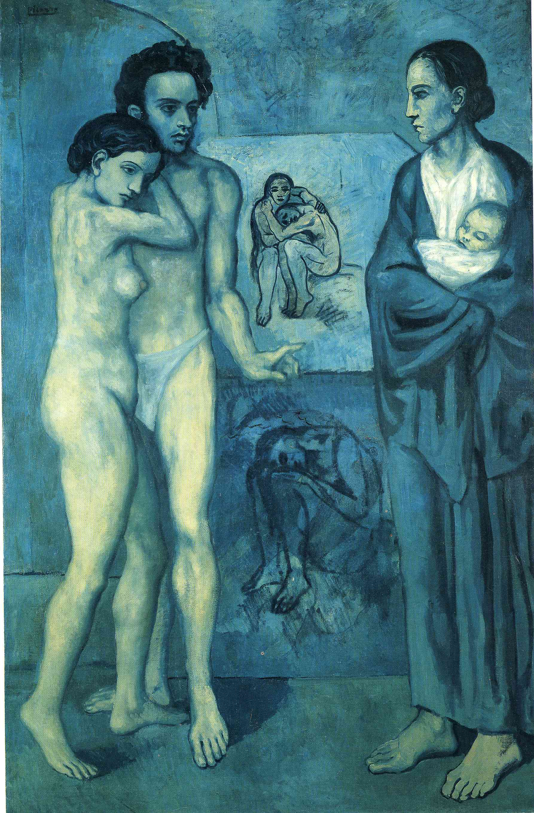

First few years, he lived in poverty. In 1903, his friend killed himself with his lover because his parents didn't allow their marry. Picasso had shock. This painting is for the friend and his lover.
He drew a gloomy blue paintings during this time. Those two people who are on the left are the friend and his lover. He painted underclass poverty, loneliness and disease, so we call this "Blue Period"